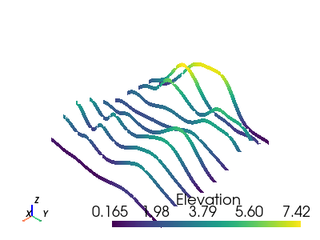
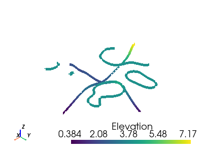
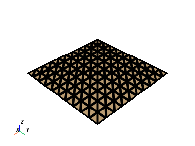

pyvista.CompositeFilters#
- class CompositeFilters(*args, **kwargs)[source]#
An internal class to manage filters/algorithms for composite datasets.
- cell_centers(vertex=True, progress_bar=False)#
Generate points at the center of the cells in this dataset.
These points can be used for placing glyphs or vectors.
- Parameters:
- Returns:
pyvista.PolyDataPolydata where the points are the cell centers of the original dataset.
Examples
>>> import pyvista >>> mesh = pyvista.Plane() >>> mesh.point_data.clear() >>> centers = mesh.cell_centers() >>> pl = pyvista.Plotter() >>> actor = pl.add_mesh(mesh, show_edges=True) >>> actor = pl.add_points(centers, render_points_as_spheres=True, ... color='red', point_size=20) >>> pl.show()
See Extract Cell Centers for more examples using this filter.
- cell_data_to_point_data(pass_cell_data=False, progress_bar=False, **kwargs)#
Transform cell data into point data.
Point data are specified per node and cell data specified within cells. Optionally, the input point data can be passed through to the output.
The method of transformation is based on averaging the data values of all cells using a particular point. Optionally, the input cell data can be passed through to the output as well.
See also
pyvista.DataSetFilters.point_data_to_cell_data().- Parameters:
- Returns:
pyvista.DataSetDataset with the point data transformed into cell data. Return type matches input.
Examples
First compute the face area of the example airplane mesh and show the cell values. This is to show discrete cell data.
>>> from pyvista import examples >>> surf = examples.load_airplane() >>> surf = surf.compute_cell_sizes(length=False, volume=False) >>> surf.plot(scalars='Area')

These cell scalars can be applied to individual points to effectively smooth out the cell data onto the points.
>>> from pyvista import examples >>> surf = examples.load_airplane() >>> surf = surf.compute_cell_sizes(length=False, volume=False) >>> surf = surf.cell_data_to_point_data() >>> surf.plot(scalars='Area')

- clip(normal='x', origin=None, invert=True, value=0.0, inplace=False, return_clipped=False, progress_bar=False, crinkle=False)#
Clip a dataset by a plane by specifying the origin and normal.
If no parameters are given the clip will occur in the center of that dataset.
- Parameters:
- normal
tuple(float)orstr, default: ‘x’ Length 3 tuple for the normal vector direction. Can also be specified as a string conventional direction such as
'x'for(1,0,0)or'-x'for(-1,0,0), etc.- origin
tuple(float),optional The center
(x,y,z)coordinate of the plane on which the clip occurs. The default is the center of the dataset.- invertbool,
optional Flag on whether to flip/invert the clip.
- value
float,optional Set the clipping value along the normal direction. The default value is 0.0.
- inplacebool,
optional Updates mesh in-place.
- return_clippedbool,
optional Return both unclipped and clipped parts of the dataset.
- progress_barbool,
optional Display a progress bar to indicate progress.
- crinklebool,
optional Crinkle the clip by extracting the entire cells along the clip. This adds the
"cell_ids"array to thecell_dataattribute that tracks the original cell IDs of the original dataset.
- normal
- Returns:
pyvista.PolyDataortuple(pyvista.PolyData)Clipped mesh when
return_clipped=False, otherwise a tuple containing the unclipped and clipped datasets.
Examples
Clip a cube along the +X direction.
triangulateis used as the cube is initially composed of quadrilateral faces and subdivide only works on triangles.>>> import pyvista as pv >>> cube = pv.Cube().triangulate().subdivide(3) >>> clipped_cube = cube.clip() >>> clipped_cube.plot()

Clip a cube in the +Z direction. This leaves half a cube below the XY plane.
>>> import pyvista as pv >>> cube = pv.Cube().triangulate().subdivide(3) >>> clipped_cube = cube.clip('z') >>> clipped_cube.plot()
See Clipping with a Surface for more examples using this filter.
- clip_box(bounds=None, invert=True, factor=0.35, progress_bar=False, merge_points=True, crinkle=False)#
Clip a dataset by a bounding box defined by the bounds.
If no bounds are given, a corner of the dataset bounds will be removed.
- Parameters:
- bounds
tuple(float),optional Length 6 sequence of floats: (xmin, xmax, ymin, ymax, zmin, zmax). Length 3 sequence of floats: distances from the min coordinate of of the input mesh. Single float value: uniform distance from the min coordinate. Length 12 sequence of length 3 sequence of floats: a plane collection (normal, center, …).
pyvista.PolyData: if a poly mesh is passed that represents a box with 6 faces that all form a standard box, then planes will be extracted from the box to define the clipping region.- invertbool,
optional Flag on whether to flip/invert the clip.
- factor
float,optional If bounds are not given this is the factor along each axis to extract the default box.
- progress_barbool,
optional Display a progress bar to indicate progress.
- merge_pointsbool,
optional If
True(default), coinciding points of independently defined mesh elements will be merged.- crinklebool,
optional Crinkle the clip by extracting the entire cells along the clip. This adds the
"cell_ids"array to thecell_dataattribute that tracks the original cell IDs of the original dataset.
- bounds
- Returns:
pyvista.UnstructuredGridClipped dataset.
Examples
Clip a corner of a cube. The bounds of a cube are normally
[-0.5, 0.5, -0.5, 0.5, -0.5, 0.5], and this removes 1/8 of the cube’s surface.>>> import pyvista as pv >>> cube = pv.Cube().triangulate().subdivide(3) >>> clipped_cube = cube.clip_box([0, 1, 0, 1, 0, 1]) >>> clipped_cube.plot()
See Clipping with Planes & Boxes for more examples using this filter.
- combine(merge_points=False, tolerance=0.0)[source]#
Combine all blocks into a single unstructured grid.
- Parameters:
- Returns:
pyvista.UnstructuredGridCombined blocks.
Examples
Combine blocks within a multiblock without merging points.
>>> import pyvista >>> block = pyvista.MultiBlock([ ... pyvista.Cube(clean=False), ... pyvista.Cube(center=(1, 0, 0), clean=False) ... ]) >>> merged = block.combine() >>> merged.n_points 48
Combine blocks and merge points
>>> merged = block.combine(merge_points=True) >>> merged.n_points 12
- compute_cell_sizes(length=True, area=True, volume=True, progress_bar=False)#
Compute sizes for 1D (length), 2D (area) and 3D (volume) cells.
- Parameters:
- lengthbool,
optional Specify whether or not to compute the length of 1D cells.
- areabool,
optional Specify whether or not to compute the area of 2D cells.
- volumebool,
optional Specify whether or not to compute the volume of 3D cells.
- progress_barbool,
optional Display a progress bar to indicate progress.
- lengthbool,
- Returns:
pyvista.DataSetDataset with cell_data containing the
"Length","Area", and"Volume"arrays if set in the parameters. Return type matches input.
Notes
If cells do not have a dimension (for example, the length of hexahedral cells), the corresponding array will be all zeros.
Examples
Compute the face area of the example airplane mesh.
>>> from pyvista import examples >>> surf = examples.load_airplane() >>> surf = surf.compute_cell_sizes(length=False, volume=False) >>> surf.plot(show_edges=True, scalars='Area')
- elevation(low_point=None, high_point=None, scalar_range=None, preference='point', set_active=True, progress_bar=False)#
Generate scalar values on a dataset.
The scalar values lie within a user specified range, and are generated by computing a projection of each dataset point onto a line. The line can be oriented arbitrarily. A typical example is to generate scalars based on elevation or height above a plane.
Warning
This will create a scalars array named
'Elevation'on the point data of the input dataset and overwrite the array named'Elevation'if present.- Parameters:
- low_point
tuple(float),optional The low point of the projection line in 3D space. Default is bottom center of the dataset. Otherwise pass a length 3
tuple(float).- high_point
tuple(float),optional The high point of the projection line in 3D space. Default is top center of the dataset. Otherwise pass a length 3
tuple(float).- scalar_range
strortuple(float),optional The scalar range to project to the low and high points on the line that will be mapped to the dataset. If None given, the values will be computed from the elevation (Z component) range between the high and low points. Min and max of a range can be given as a length 2 tuple(float). If
strname of scalara array present in the dataset given, the valid range of that array will be used.- preference
str,optional When an array name is specified for
scalar_range, this is the preferred array type to search for in the dataset. Must be either'point'or'cell'.- set_activebool,
optional A boolean flag on whether or not to set the new
'Elevation'scalar as the active scalars array on the output dataset.- progress_barbool,
optional Display a progress bar to indicate progress.
- low_point
- Returns:
pyvista.DataSetDataset containing elevation scalars in the
"Elevation"array inpoint_data.
Examples
Generate the “elevation” scalars for a sphere mesh. This is simply the height in Z from the XY plane.
>>> import pyvista >>> sphere = pyvista.Sphere() >>> sphere_elv = sphere.elevation() >>> sphere_elv.plot(smooth_shading=True)
Access the first 4 elevation scalars. This is a point-wise array containing the “elevation” of each point.
>>> sphere_elv['Elevation'][:4] array([-0.5 , 0.5 , -0.49706897, -0.48831028], dtype=float32)
See Using Common Filters for more examples using this filter.
- extract_all_edges(use_all_points=False, progress_bar=False)#
Extract all the internal/external edges of the dataset as PolyData.
This produces a full wireframe representation of the input dataset.
- Parameters:
- use_all_pointsbool, default:
False Indicates whether all of the points of the input mesh should exist in the output. When
Trueenables point renumbering. If set toTrue, then a threaded approach is used which avoids the use of a point locator and is quicker.By default this is set to
False, and unused points are omitted from the output.This parameter can only be set to
Truewithvtk==9.1.0or newer.- progress_barbool,
optional Display a progress bar to indicate progress.
- use_all_pointsbool, default:
- Returns:
pyvista.PolyDataEdges extracted from the dataset.
Examples
Extract the edges of a sample unstructured grid and plot the edges. Note how it plots interior edges.
>>> import pyvista >>> from pyvista import examples >>> hex_beam = pyvista.read(examples.hexbeamfile) >>> edges = hex_beam.extract_all_edges() >>> edges.plot(line_width=5, color='k')

See Extract Cell Centers for more examples using this filter.
- extract_geometry()[source]#
Extract the surface the geometry of all blocks.
Place this filter at the end of a pipeline before a polydata consumer such as a polydata mapper to extract geometry from all blocks and append them to one polydata object.
- Returns:
pyvista.PolyDataSurface of the composite dataset.
- outline(generate_faces=False, nested=False, progress_bar=False)[source]#
Produce an outline of the full extent for the all blocks in this composite dataset.
- Parameters:
- Returns:
pyvista.PolyDataMesh containing the outline.
- outline_corners(factor=0.2, nested=False, progress_bar=False)[source]#
Produce an outline of the corners for the all blocks in this composite dataset.
- Parameters:
- Returns:
pyvista.PolyDataMesh containing outlined corners.
- point_data_to_cell_data(pass_point_data=False, progress_bar=False, **kwargs)#
Transform point data into cell data.
Point data are specified per node and cell data specified within cells. Optionally, the input point data can be passed through to the output.
See also:
pyvista.DataSetFilters.cell_data_to_point_data()- Parameters:
- Returns:
pyvista.DataSetDataset with the point data transformed into cell data. Return type matches input.
Examples
Color cells by their z coordinates. First, create point scalars based on z-coordinates of a sample sphere mesh. Then convert this point data to cell data. Use a low resolution sphere for emphasis of cell valued data.
First, plot these values as point values to show the difference between point and cell data.
>>> import pyvista >>> sphere = pyvista.Sphere(theta_resolution=10, phi_resolution=10) >>> sphere['Z Coordinates'] = sphere.points[:, 2] >>> sphere.plot()

Now, convert these values to cell data and then plot it.
>>> import pyvista >>> sphere = pyvista.Sphere(theta_resolution=10, phi_resolution=10) >>> sphere['Z Coordinates'] = sphere.points[:, 2] >>> sphere = sphere.point_data_to_cell_data() >>> sphere.plot()

- slice(normal='x', origin=None, generate_triangles=False, contour=False, progress_bar=False)#
Slice a dataset by a plane at the specified origin and normal vector orientation.
If no origin is specified, the center of the input dataset will be used.
- Parameters:
- normal
tuple(float)orstr, default: ‘x’ Length 3 tuple for the normal vector direction. Can also be specified as a string conventional direction such as
'x'for(1, 0, 0)or'-x'for(-1, 0, 0), etc.- origin
tuple(float),optional The center
(x, y, z)coordinate of the plane on which the slice occurs.- generate_trianglesbool,
optional If this is enabled (
Falseby default), the output will be triangles. Otherwise the output will be the intersection polygons.- contourbool,
optional If
True, apply acontourfilter after slicing.- progress_barbool,
optional Display a progress bar to indicate progress.
- normal
- Returns:
pyvista.PolyDataSliced dataset.
Examples
Slice the surface of a sphere.
>>> import pyvista >>> sphere = pyvista.Sphere() >>> slice_x = sphere.slice(normal='x') >>> slice_y = sphere.slice(normal='y') >>> slice_z = sphere.slice(normal='z') >>> slices = slice_x + slice_y + slice_z >>> slices.plot(line_width=5)

See Slicing for more examples using this filter.
- slice_along_axis(n=5, axis='x', tolerance=None, generate_triangles=False, contour=False, bounds=None, center=None, progress_bar=False)#
Create many slices of the input dataset along a specified axis.
- Parameters:
- n
int,optional The number of slices to create.
- axis
strorint, default: ‘x’ The axis to generate the slices along. Perpendicular to the slices. Can be string name (
'x','y', or'z') or axis index (0,1, or2).- tolerance
float,optional The tolerance to the edge of the dataset bounds to create the slices. The
nslices are placed equidistantly with an absolute padding oftoleranceinside each side of theboundsalong the specified axis. Defaults to 1% of theboundsalong the specified axis.- generate_trianglesbool,
optional If this is enabled (
Falseby default), the output will be triangles. Otherwise the output will be the intersection polygons.- contourbool,
optional If
True, apply acontourfilter after slicing.- boundssequence,
optional A 6-length sequence overriding the bounds of the mesh. The bounds along the specified axis define the extent where slices are taken.
- centersequence,
optional A 3-length sequence specifying the position of the line along which slices are taken. Defaults to the center of the mesh.
- progress_barbool,
optional Display a progress bar to indicate progress.
- n
- Returns:
pyvista.PolyDataSliced dataset.
Examples
Slice the random hills dataset in the X direction.
>>> from pyvista import examples >>> hills = examples.load_random_hills() >>> slices = hills.slice_along_axis(n=10) >>> slices.plot(line_width=5)
 Slice the random hills dataset in the Z direction.
>>> from pyvista import examples >>> hills = examples.load_random_hills() >>> slices = hills.slice_along_axis(n=10, axis='z') >>> slices.plot(line_width=5)

See Slicing for more examples using this filter.
- slice_along_line(line, generate_triangles=False, contour=False, progress_bar=False)#
Slice a dataset using a polyline/spline as the path.
This also works for lines generated with
pyvista.Line().- Parameters:
- line
pyvista.PolyData A PolyData object containing one single PolyLine cell.
- generate_trianglesbool,
optional If this is enabled (
Falseby default), the output will be triangles. Otherwise the output will be the intersection polygons.- contourbool,
optional If
True, apply acontourfilter after slicing.- progress_barbool,
optional Display a progress bar to indicate progress.
- line
- Returns:
pyvista.PolyDataSliced dataset.
Examples
Slice the random hills dataset along a circular arc.
>>> import numpy as np >>> import pyvista >>> from pyvista import examples >>> hills = examples.load_random_hills() >>> center = np.array(hills.center) >>> point_a = center + np.array([5, 0, 0]) >>> point_b = center + np.array([-5, 0, 0]) >>> arc = pyvista.CircularArc(point_a, point_b, center, resolution=100) >>> line_slice = hills.slice_along_line(arc)
Plot the circular arc and the hills mesh.
>>> pl = pyvista.Plotter() >>> _ = pl.add_mesh(hills, smooth_shading=True, style='wireframe') >>> _ = pl.add_mesh(line_slice, line_width=10, render_lines_as_tubes=True, ... color='k') >>> _ = pl.add_mesh(arc, line_width=10, color='grey') >>> pl.show()
See Slicing for more examples using this filter.
- slice_orthogonal(x=None, y=None, z=None, generate_triangles=False, contour=False, progress_bar=False)#
Create three orthogonal slices through the dataset on the three cartesian planes.
Yields a MutliBlock dataset of the three slices.
- Parameters:
- x
float,optional The X location of the YZ slice.
- y
float,optional The Y location of the XZ slice.
- z
float,optional The Z location of the XY slice.
- generate_trianglesbool,
optional If this is enabled (
Falseby default), the output will be triangles. Otherwise the output will be the intersection polygons.- contourbool,
optional If
True, apply acontourfilter after slicing.- progress_barbool,
optional Display a progress bar to indicate progress.
- x
- Returns:
pyvista.PolyDataSliced dataset.
Examples
Slice the random hills dataset with three orthogonal planes.
>>> from pyvista import examples >>> hills = examples.load_random_hills() >>> slices = hills.slice_orthogonal(contour=False) >>> slices.plot(line_width=5)
 See Slicing for more examples using this filter.
- triangulate(inplace=False, progress_bar=False)#
Return an all triangle mesh.
More complex polygons will be broken down into triangles.
- Parameters:
- Returns:
pyvista.PolyDataMesh containing only triangles.
Examples
Generate a mesh with quadrilateral faces.
>>> import pyvista >>> plane = pyvista.Plane() >>> plane.point_data.clear() >>> plane.plot(show_edges=True, line_width=5)

Convert it to an all triangle mesh.
>>> mesh = plane.triangulate() >>> mesh.plot(show_edges=True, line_width=5)
